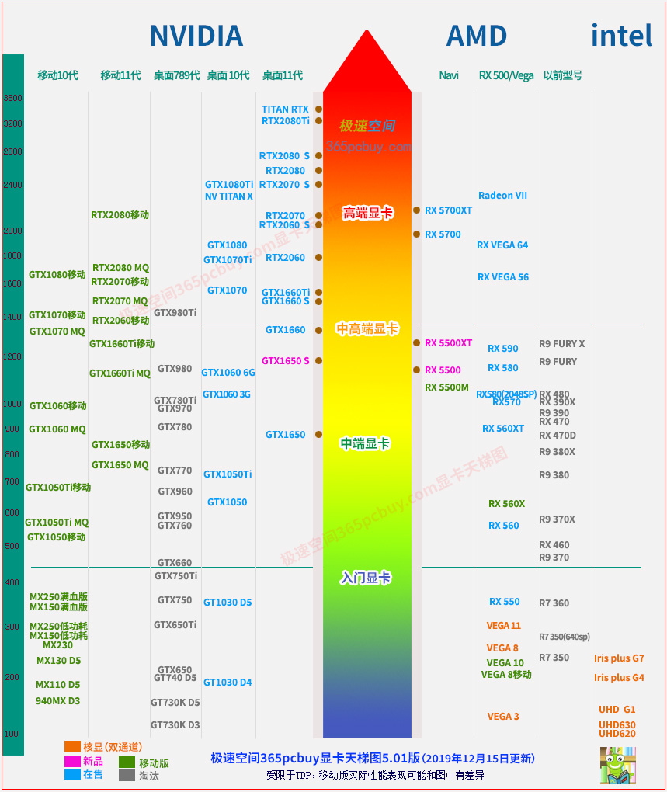

文章标题
发表时间：2019-11-10 文章浏览次数：2165 作者：pc大湿
此文已经于2019年12月15日更新！最近更新的内容用绿色字体显示。极速空间显卡天梯图为365pcbuy.com站长pc小虫（24年电脑软硬件经验）原创绘制，尽量精简，但保留了一些老型号，方便对比。
如果您是想找：
5.01版新增两个型号：RX 5500XT和RX 5500M。
RX 5500XT从目前跑分看，和RX 590打成平手，但考虑到后期驱动优化必然是RDNA更占优势，以及游戏对DX12支持更优，因此在图片上把RX 5500XT放在RX 590略高2%位置。
搭载RX 5500M的笔记本现已发布，这说明AMD的大杀器RDNA GPU已进入移动领域。
两个数字—— 40%和50%，前者是AMD給intel的当头一棒，后者是向Nvidia打出的重拳。
40%是AMD处理器从挖掘机到锐龙一代的IPC（ Instruction Per Clock CPU核心效率）提升的幅度，到目前的锐龙三代，已经超越了酷睿九代。
50%是AMD GPU能耗比提升幅度，RDNA相比GCN5.0，性能提升14%的同时功耗降低23%，能耗比提升达到了50%，和NVIDIA打平。
如果对50%这个冰冷的数字没什么感觉，看看老架构的步履维艰也许能感到些热血沸腾：老一代的GCN架构，从1.0到4.0共计三代，同频性能一共只提升了15%。要一次性提升50%，只有质变才能达到这么大的量变。
A卡以前很惨，RDNA是转折点。
由于RT5700和RX 5700XT的出现，才有了RTX2060 S和RTX2070 S的大幅度提升（要盖住对手的风头），而RTX2080 S则由于暂时没有对手，提升幅度很小。
从图中可以看到一个有趣的现象：在中高端和高端显卡，N卡和A卡型号分布密集，而中低端和低端卡的型号却稀稀疏疏，其原因很简单，中高端和高端有点像一条鱼的身体，肉多刺少（利润大），厂家就喜欢吃这一截，而顶端和低端，就如同鱼头和鱼尾，顶端显卡虽然利润大，但买者寥寥，低端显卡无利可图，厂家没啥兴趣。

注：上图中S后缀代表SUPER系列，包含图形显卡的天梯图可参考4.01版 查看>>
此文内容和极速空间显卡天梯图均为站长pc小虫原创，如需使用此图片，查看规则>>
显卡天梯图解读：
1、TDP差异
两台笔记本电脑显卡型号相同，如果TDP不同，其性能就会有差异。如RTX2060移动版TDP在80W-90W之间，性能差距大约5%。又如MX150显卡，同样是低功耗版，其频率差异也大，不可能细分到把所有频率标注后再排序，这样做一方面会导致图太过冗余复杂，另一方面也没有意义。
2、版本差异
同样的GPU，公版和非公版性能有差异，非公版本身之间也有差异。差异大的分开标注。如GT1030，有D5和D4版本， D5的显存频率通常为6000MHz左右，D4版显存频率只有2000MHz出头，而且GPU中的纹理单元数量也有减少，从32删减到了24，这导致其性能只有GT1030 D5的大约一半，本来GT1030 D5的性能就已经很惨了，这个D4版本性能更惨。
3、核显的性能值做了一定折算，但尚不足以反应实际游戏的情况。
极速空间显卡天梯图更多的是以跑分为基础进行统计，但在实际游戏中，跑分差距不大的核显和NVidia独显对比，会发现独显要快很多。
例如：MX230独显，理论上只比Iris plus G7、Vega10等高15%，但在一些游戏中要快30~100%。DOTA2，MX230在1080P+高画质可跑60帧，换成核显只有30帧，其主要原因有三：
（1）、独显不占显存。
（2）、核显还要会受CPU本身TDP限制，特别是移动版。
（3）、实际游戏对N卡优化较好。
4、综合权衡
极速空间显卡天梯图的排序是一种综合权衡，综合考虑跑分、游戏实际、甚至考虑了市场实际情况。如GTX1660，对手是RX590，不少项目上互有胜负。RX560XT参数上和RX470D一样，但实际会略高一些，其原因并不是内核做了多大优化，而是目前市场上能买到的只有一款，其核心频率和显存频率都比一般的RX470D更高。
同样的，RX580（2048SP）和RX570实质是相同的卡，但前者普遍频率要高些，因此在图中的位置也略高，这也是考虑了市场实际的情况。
5、关于移动版命名
以前的笔记本显卡上的数字型号后面都有一个"M"，这代表是移动版本，比如NV公司的GT830M，GTX950M等，AMD公司的R9 M290X、HD8750M等，但NV从第十代N显卡开始，在移动版本的型号上，取消了这个M，这就导致了出现“混乱”，比如说GTX1060 6G，台式机显卡和笔记本显卡的型号完全一样，但参数上却有出入，为什么会出现这个现象呢？
原因是以前的显卡由于工艺和微架构设计的局限，能耗比较高，无法达到笔记本的散热标准。
例如：GTX960，流处理器为1024个，而GTX960M流处理器只有640个，频率也要低一些，由于笔记本的散热远不及台式机，这也是无奈之举，只有缩水才能降低功耗，控制住温度。由于规格缩水太多，很多人都知道“多个M性能砍一半”这句话。
到了第十代N卡，能耗比大幅度提升，笔记本显卡的规格和台式机做到了基本一致，主要区别是降低一些频率来控制功耗，性能上缩水的不多，因此NV就取消了这个M，以免让人误解为“多个M性能砍半”。但是，移动版和桌面版的性能毕竟有差异，有的差异还很大，因此为了避免误导本文读者，我在图中备注了“移动”二字来和桌面显卡相区别。